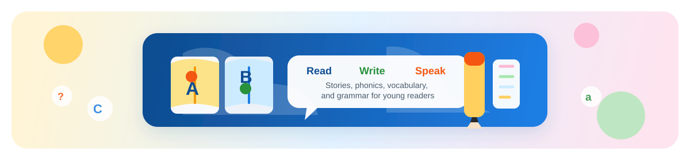
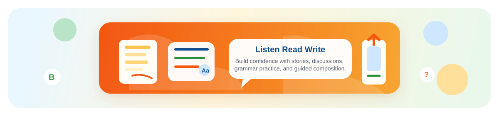

Powerful features designed to make learning engaging, effective, & fun.
Learn from industry professionals with years of experience
Personalised learning paths that adapt to your pace and style
Monitor your learning journey with detailed analytics